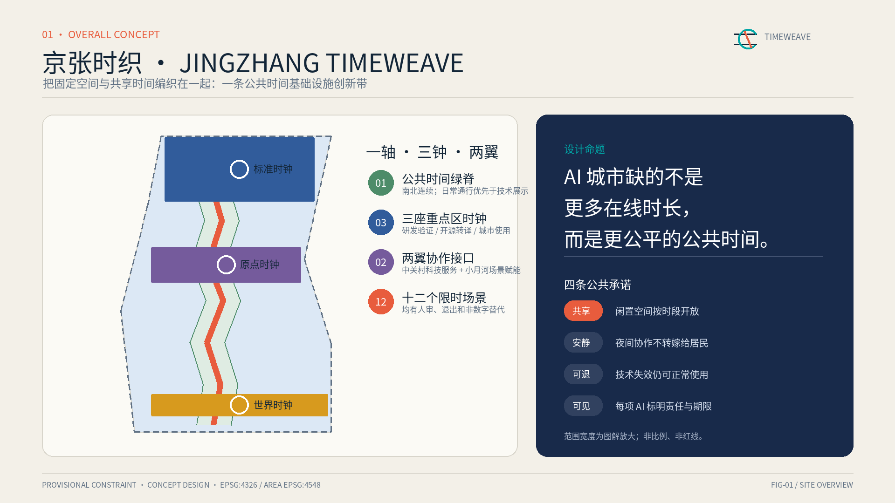
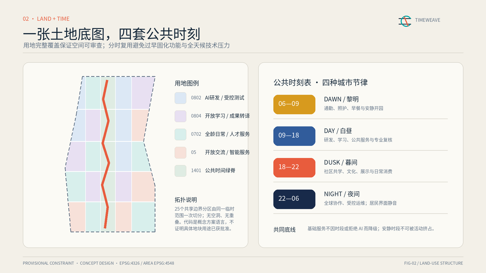
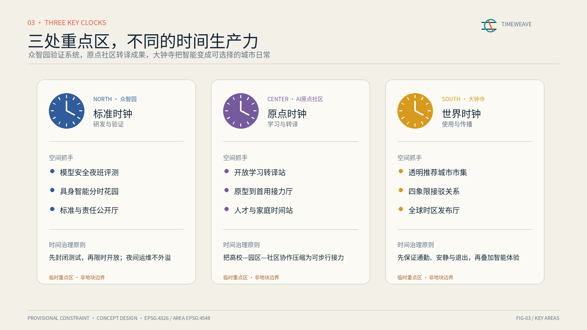
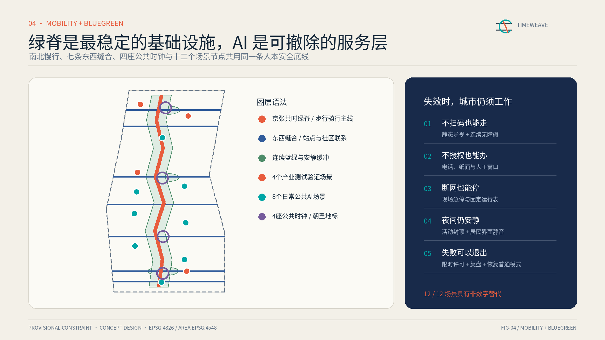
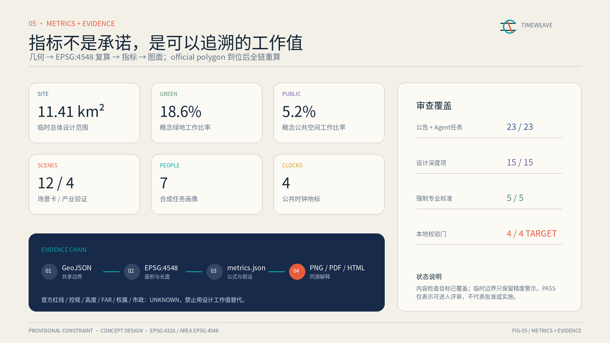

统筹研究范围
约 43.6 km²：研究创新链、人才链、公共服务链与未来城市规则。
- 研究—验证—转译—首用
- 全球案例只借鉴机制
- 公共权利优先于技术展示
把固定空间与共享时间编织在一起：绿脊永久，技术可撤；先运营证明公共价值，再决定不可逆建设。
总览图将三处重点区域、四座公共时钟、两翼协作接口与十二个有边界场景放在同一证据框架。图形来自提交 GeoJSON 的同源投影绘制。

统筹研究建立规则，总体设计形成网络，重点区域验证接口；同一空间用黎明、白昼、暮间、夜间四种节律共享。
约 43.6 km²：研究创新链、人才链、公共服务链与未来城市规则。
约 11.4 km²：形成公共时间绿脊、五类用地语法、七条缝合线与九个项目。
众智园、AI 原点社区、大钟寺：分别验证可信研发、成果转译和城市使用。

不是三个同质科技园，而是一条创新接力链：众智园验证系统，原点社区转译成果，大钟寺让智能进入可选择的城市日常。
众智园 · 研发与验证
模型安全、具身花园、标准与责任公开厅。
AI 原点社区 · 学习与转译
开放学习、首用接力、人才与家庭时间站。
京张中段 · 记忆与勘误
铁路—中关村—AI 的清权时间线。
大钟寺 · 使用与传播
多语服务、透明市集、跨时区发布。

四个产业验证场景、八个公共服务场景。每项均公开最小数据、人工复核、有效期、暂停条件和非数字替代。
专家签署适用边界，到期默认关闭。
现场安全员可立即停机。
专业评审决定是否进入下一阶段。
交通管理与安全员共同复核。
残障使用者和人工巡检共同纠错。
服务人员确认预约与建议。
场地管理员处理冲突。
多语服务人员复核。
运营者按居民反馈调整。
运维人员决定是否生成工单。
用户可关闭、申诉并要求人工说明。
史料编辑复核并接受公众勘误。
一条南北绿脊、七条东西缝合、四座公共时钟和十二时站共用人本安全底线；建筑仅为14个概念载体，不代表现状或拆改留结论。

九个更新项目以条件成熟度触发，而不是用想象年份承诺建设。每个项目先验证需求和公共价值，再进入微更新与永久工程。
连续步行审计、实体导视和普通模式。
逐点核验过街、骑行和轨道接驳。
责任、评测与适用边界公开场。
开源贡献年轮和首用接力台。
清权时间线和公众勘误台。
多语服务、透明市集和发布厅。
场景责任登记、限时许可和退出。
学习、照护和企业服务分时开放。
季度复核、申诉和公开暂停理由。
指标是可追溯的工作值，不是绩效承诺。GeoJSON、EPSG:4548 复算、metrics.json、图面与报告共享一条证据链。

所有事实、设计、工作几何与缺口分层登记；资料缺失不会用伪精确数字填补。
项目依据来自官方公告、Agent任务书、站点包、来源登记和处理资料包；AI Singapore、Mila、Vector、Punggol、Helsinki AI Register、STATION F 只作机制背景。完整 URL、用途和限制在 sources.json。
sources.json · compliance_matrix.jsonstandard_matrix.json · design_depth_matrix.json边界、重点区、用地、建筑、道路、蓝绿和项目均明确 concept / provisional。控规、道路红线、权属、市政、消防、文保和工程条件到位后须重新校准。
assumptions.json · metrics.jsongeometry/*.geojson · self_check.json京张时织 · COMMUNITY-DISPLAY-ONLY · 所有图形为本提交原创离线资产 · 无远程脚本、地图瓦片、字体、表单或追踪